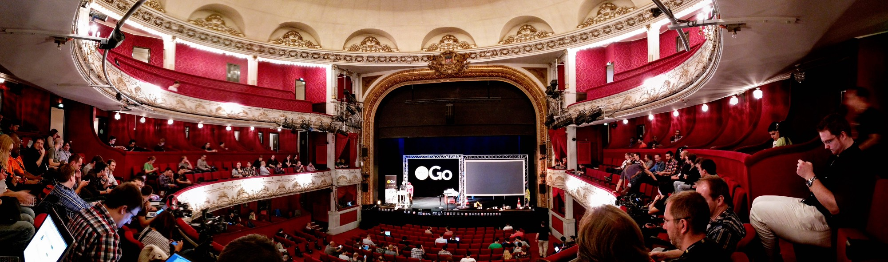

Back from dotgo 2015

Today I’ve been at the dotGo conference in Paris, the European conference about the Go programming language. Quick summary: fantastic!
It’s the second time I participate (I’ve been there also last year, 2014) and I found exactly the same impeccable organization, a beautiful location (with lots of food..), a great ambiance, and the talks, as usual, have been extremely interesting, inspiring and cool. Some of them (not in the same order of the conference):